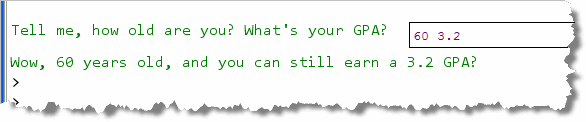
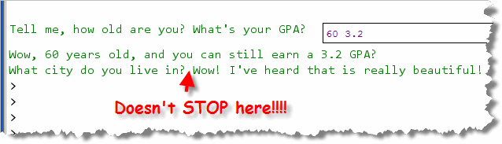
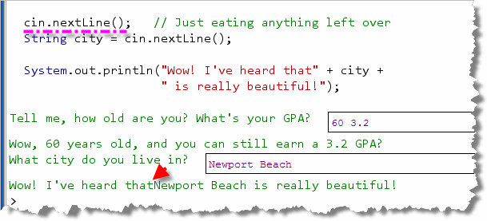

When a user types the number 123 from the keyboard, what is
actually stored in memory are the three binary values
0000-0000 0011-00010000-0000 0011-00100000-0000 0011-0011
representing the three Java character values
'1', '2', and '3', stored in a Java
String object.
If the user is entering values intended to be used in a
calculation, (and not a street address, for instance), those
three char values will have to be converted from
text to the binary 32-bit integer 123, shown here:
0000-0000 0000-0000 0000-0000 0111-1011
This process—turning human-readable text, input from the keyboard or a file, into binary numbers, (and its alter-ego, turning binary numbers into human-readable text), is the job of parsing or conversion.
Later, you'll learn how to use Java's wrapper classes to
parse String user input
and convert that input into integers, real numbers, and
even dates and times. For right now, though, we'll let
the Scanner class do the work for us.
Scanner Numeric Input
Previously you learned how to use the
Scanner class to read a line of text from
the user, (calling its nextLine() method),
and then store the line of text in a String
variable.
The process for retrieving an int
or double is almost identical:
- Construct a
Scannervariable, using theScannerconstructor, passingSystem.inas a parameter to the constructor. - Call the appropriate numeric input method,
nextInt()ornextDouble(), and store the returned value in your variable.
Scanner Example
Let's use the Interactions Pane. I'll assume you've created a Scanner
variable as in Lecture 1B. Now we'll try reading some
numeric values as well as text:

- The user is prompted to enter their age and gpa. I'm assuming the user will enter a whole number for their age, and a real number for gpa.
- Next, the
intvariableageis defined and theScanner nextInt()method is called to read an integer from the keyboard. The characters that the user types in are automatically converted fromStringto anint, and the result is placed in the variableage. - On the next line, the same process is repeated, except
a
doublevariable,gpais defined and theScanner nextDouble()method is used to read a real number from the keyboard. This time, the characters typed by the user are converted to adouble, and placed in the variablegpa. - Finally, in the last statement, (spanning two lines), the user's input is concatenated along with the program's output message.
If you run this code fragment you'll see some
output that looks a little like this:

Notice that you can enter the two numbers on the same line, separated by tabs or spaces. You can also press Enter after each number. Both styles of input are processed correctly.How Numeric Input Works
Here's a picture that shows the characters I entered when I
ran the program. Notice that the first character is a space,
followed by a six and a zero. That is followed by another
space, a three, a period, a two and the Enter key or newline:
When cin.nextInt() is encountered at runtime, the Scanner
object starts reading characters, looking for a character that
could be part of an integer (a digit or a sign character). Any
whitespace characters (spaces, tabs, newlines) are simply
discarded. In my example here, the first space character would be
read and then ignored. If any other characters are encountered,
an error occurs. (You can read about the errors in the next section.)
When a character that makes up an integer is encountered,
(like the 6 in my input), then the nextInt()
method keeps reading characters, until a non-integer
character is found. In this case, it will read the 6 and the 0,
but because the space following the zero is not part of
an integer, nextInt() stops reading from
System.in. The characters read up to this point
are "marshaled" or collected in the String
"60", which is then converted
to an int value, and that is the value returned
and stored in the variable age.
When the cin.nextDouble() on the following line
is encountered, the Scanner picks up
exactly where the previous scan ended, processing the
space character following the 0 in 60:
 This was the non-integer
character that caused
This was the non-integer
character that caused nextInt() to stop
reading. Like nextInt(), the nextDouble()
method skips or discards leading whitespace characters, looking
for a character that matches the pattern for a valid double
When it encounters the 3, it starts assembling the characters into
a String. The decimal point is legal inside a double,
so that is added to the collection; likewise the 2 is legal as
part of a double following a decimal point. The newline character
that is encountered following that, though, is not a legal
double character and so reading stops.
The characters that are assembled so far are converted to a
double by the Scanner method, and then
returned and stored in the gpa variable.
The next input method that is called will pick up with the newline
character as its first input.

Input Errors
What happens, if the user types in an unexpected
input value, say 60.5 for age, or perhaps "sixty",
or even just adds an extra comma separating the values
like this:
 In Java, numbers read by a
In Java, numbers read by a Scanner must be separated by spaces. In this case,
the Scanner attempts to convert the String 60,
to an integer, and fails.
When this error is noticed by the Scanner object,
it prints an error message on the console, and terminates
the program.
This is called a runtime error, because it's detected when
your program runs, rather than when you compile it. (After all, the
compiler has no way of telling what the user will type in when
the program runs.)
Because of the mechanism used to generate runtime errors in Java, this kind of event is also called throwing an exception. You'll learn about Java's different kinds of exceptions later in the semester. At that time, you'll also learn how to catch an exception, and perhaps give the user a second chance to correct their input.
For right now, though, your best defense is to make your instructions (prompts) as explicit as possible. Instead of saying something like "Enter the number of miles:", you could write "Enter miles as a whole number (25) :" or something similar.
String Input Errors
You won't have an input-mismatch exception with
String variables, but you can still get some
unexpected input, especially when you mix String
and numeric input.
Here's an example. Let's add one more prompt to ask the user
where they live, following the previous input, like this:
 As before:
As before:
- We prompt the user for some input, in this case asking for the city that they live in.
- We the read the input, using the
ScannernextLine()method, and store the user's response in aStringvariable namedcity. - Finally, we combine the user's input with some concatenation to display an output message with something complimentary about their home-town.
Doesn't look like there's any room for error, does it. Well,
go ahead and run it, and here's the output you should see:

Hmmmm. That seems to be a problem. What's happening? Why doesn't it stop when I callnextLine()?
Well, you remember the schematic I showed you, after the
GPA value was read?
When you do a nextLine() immediately following
numeric input, the newline character is the first character
that is read. Unfortunately, that's also the character that
"tells" nextLine() that input is finished
for this line of text.
Because of that, the variable city is assigned the
empty String. To fix it, just add an extra
nextLine() immediately between numeric and
line-oriented text input like this:

If you mix text and numeric input using the Scanner
class, you'll need to remember to add extra nextLine()
statements to remove the newline characters following numeric
input. You don't need to do this between numeric
input statements.
Just because your code has no syntax errors or no runtime errors, that doesn't mean it is correct. Your program can still contain logic errors, as my code fragment does here. A logic error occurs when the actual output don't match the expected output of your program.